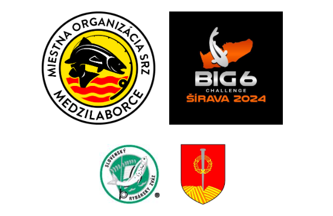

Vitajte na stránke
Mestskej organizácie Slovenského rybárskeho zväzu
Medzilaborce

O nás
Účelom internetovej stránky je poskytnúť členom našej organizácie, ale aj ostatným návštevníkom informácie o organizovanom rybárstve, o rybárskych revíroch MO, hospodárskej, zarybňovacej a rybolovnej činnosti v revíroch, nákupe a vysádzaní násadových rýb, práci predsedníctva a výboru MO, činnosti rybárskej stráže, aktivitách sekcií investičnej a brigádnickej, čistoty vôd a tiež športovej a kultúrnej. Našou snahou bude poskytovať veľa zaujímavých a aktuálnych informácii zo života nielen našej organizácie, ale aj celého Slovenského rybárskeho zväzu. Veríme, že naše internetové stránky Vás svojim obsahom zaujmú a budete ich pravidelnými návštevníkmi.
Novinky
<
>